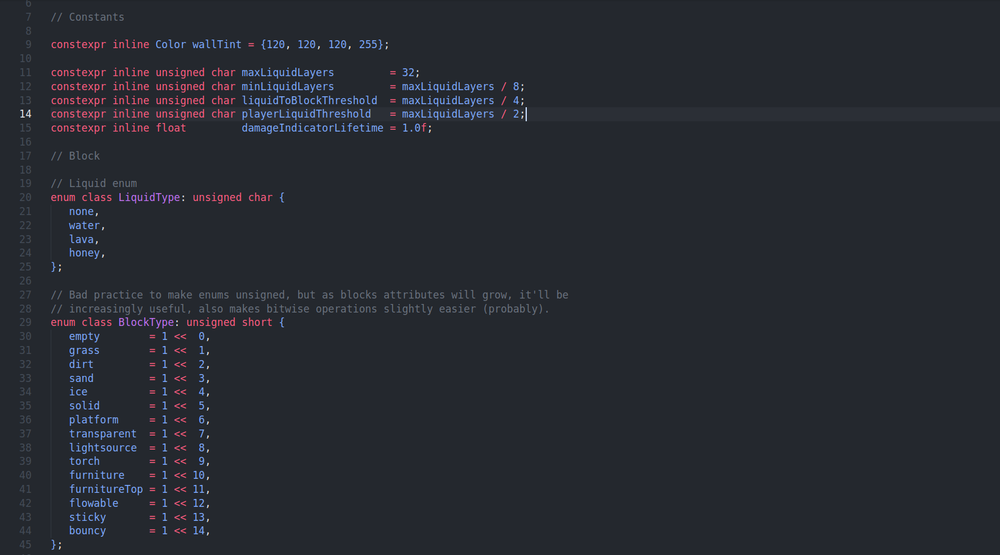
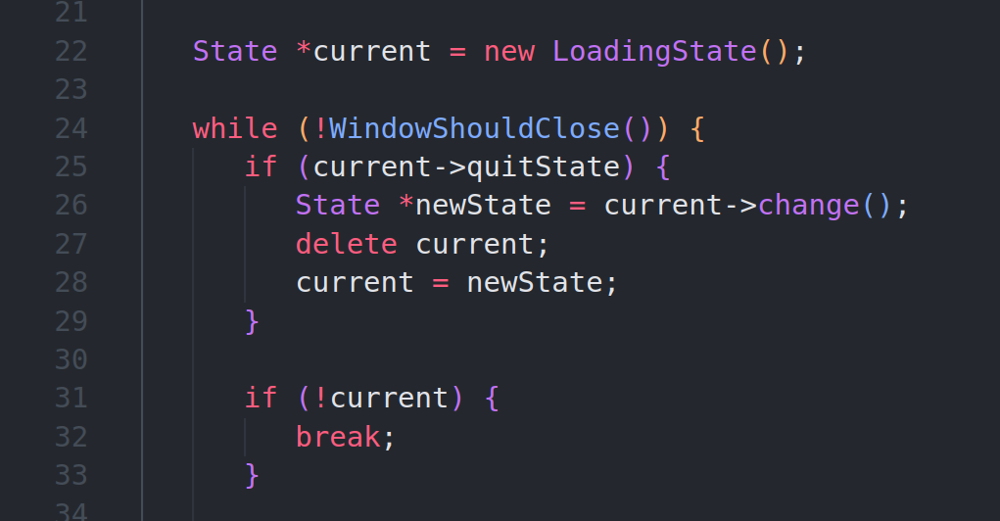
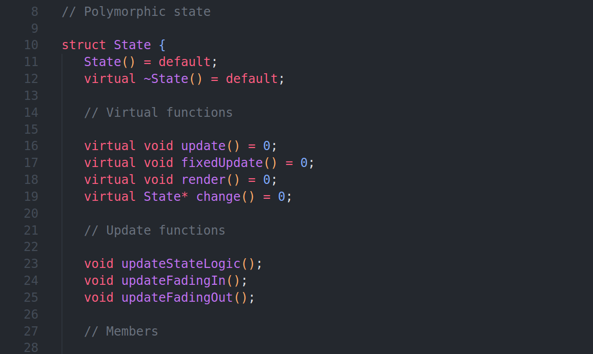
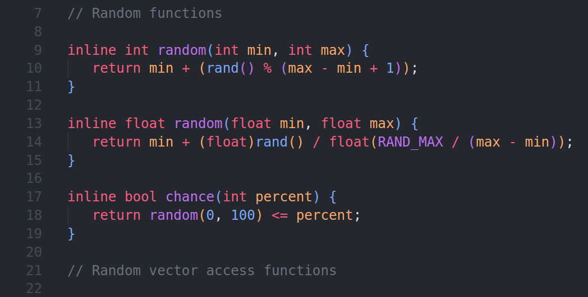

How I Write C++
Daniel Vishnevsky
NOTE: this is purely my opinion and this isn't the most optimal way to write C++ for everyone. I think that everyone should find their own best way to write code. I have written C++ for 17 months up until this point and I've tried many styles and approaches and I think that this one fits me the best. Also acknowledge that I am really biased towards simplicity. I'm not sure how this can affect something badly, but I'm pointing this out anyway.
Philosophy
My two philosophies are simple and come from the best at C/C++: 1) Write simple code and 2) Don't hide anything. What the second philosophy means is that I don't use any private fields or use any code that isn't usable outside of the class. I don't always obey these two rules, as writing simple code is harder than it seems. But I always try my best and that's what matters.
Memory
I'm going to point out straight away how I handle memory: I don't. Okay, that might be a lie, but I try my best to not allocate resources. In my game Sandbox-2D, which is a pretty large game, I only allocate two things: the current game state and the world generator. The latter only because it must be used in the main thread and a worker thread.
I also only use raw pointers, unless I have a good reason to use unique pointers. In the example above I clearly know when I need a new state and when I need to delete it, so I don't see any point for unique pointers here.
Why? Heap is slow. That's the whole point - accessing variables from the heap is way slower than from CPU caches. And I don't really like handling a massive amount of pointers at once.
Objects
I try to not use polymorphism. Again, in Sandbox-2D I use it for one thing, which you may have noticed already: the state handler. I'll admit that if I started fresh tomorrow, I'd use a switch statement instead. I feel that it's okay to use it if it's appropriate and I'm not saying that I have completely abandoned it, but I see far too many people use it too many places, making the code more complex than it needs to be.
And since one of my major philosophies is to not hide anything, I always use structs. Since class is private by default and I don't use private, public and protected modifiers, you will never see me using classes in my newer projects (unless for enum classes). And on the note of enums, I only try to use enum classes, unless it's extremely annoying to use. I also never define my own namespaces.
Generic Programming
I don't really like templates nor meta programming. The most I'm doing with templates is using template<typename T> and template<typename...Args> in some utility functions. I don't really like the functional argument code either. I think they're fine to use, just not my favorite. I don't write generic containers, so I don't have a big need for them.

Function/Operator Overloading
Why I am putting this here? I'm starting to think this is evil. It's easy to use the wrong function, that could produce vastly different results. And the most time spent in coding is from problem solving and debugging, not writing, so I think it's affordable to name each function differently. Here's an evil example in my code:
I could accidentaly call the wrong function and then wonder what's wrong for a long time. It wouldn't be a problem if I named both of the functions randomInt and randomFloat from the start.
Things I Avoid
I've learned to not use any other containers than array, vector, set, map and stack. Others are simply not necessary for me. I don't know what a list or a greater is in C++ and I'll never do. And I can say the same about most other shiny C++ features. I don't like including a big amount of libraries either.
Unless I for sure know that it will make my life easier, I try to avoid it, that's it. Also, the less tools I have, the easier it is for me to decide which to use.
From Who I Learned
I don't think anyone else has taught me as much as these people (not ordered in a particular way): Terry A. Davis, Casey Muratori, Eskil Steenberg, Low Level Game Dev and Learncpp.com.